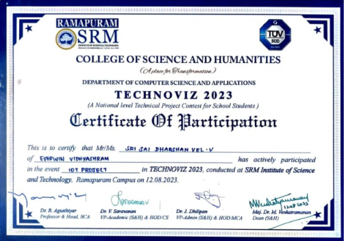
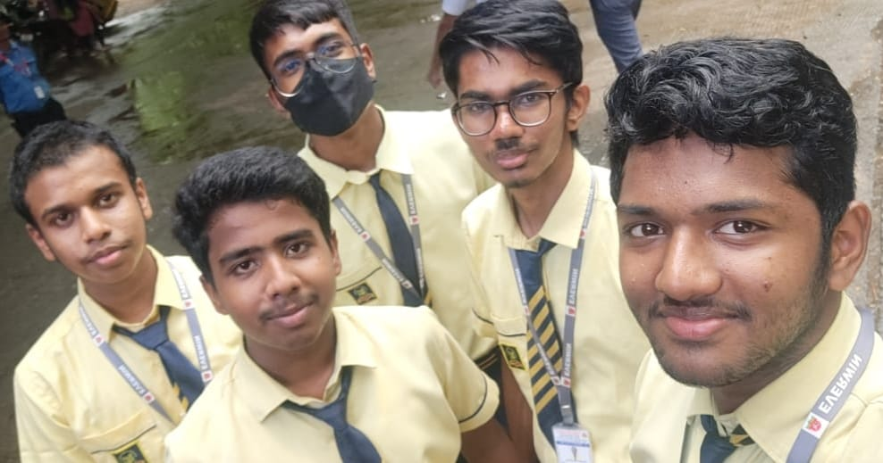
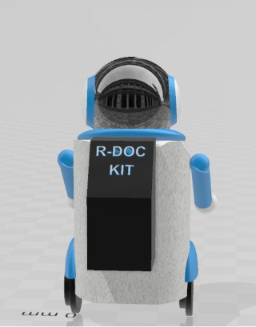
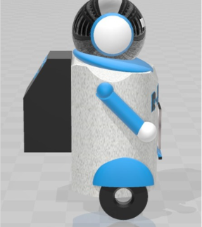
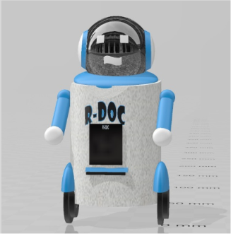

R‑DOC
Robot Doctor
🤖 AI-Driven Healthcare Assistant


Where It All Began
In 2023, at the age of 16, our four-member team participated in TECHNOVIZ 2023 — a National-Level Technical Project Contest for School Students, conducted by the Department of Computer Science and Applications at SRM Institute of Science and Technology, Ramapuram.
"Healthcare accessibility remains one of the most pressing challenges in developing nations. We wanted to imagine a future where basic medical assistance could exist inside every home — and that vision became R-DOC."
Many people delay critical hospital visits because of travel distance, financial limitations, lack of medical awareness, or the simple unavailability of doctors. Rather than building yet another healthcare app, we envisioned a single, intelligent system capable of addressing all these gaps simultaneously — an AI-powered domestic healthcare companion.

One Robot.
Every Healthcare Need.
Rather than replacing physicians, R-DOC was conceived as an intelligent domestic healthcare companion — capable of triaging symptoms, providing preliminary guidance, connecting patients with certified medical professionals, and coordinating emergency interventions, all from within the home.
System Architecture
End-to-end flow — from patient interaction to emergency response
Engineering Breakdown
APIs & Planned Integrations
R-DOC's emergency response capabilities were designed around a set of carefully selected APIs and services, each fulfilling a distinct role in the healthcare workflow.


Why We Stopped — & Why It Still Matters
Every ambitious project eventually encounters the constraints of the real world. For R-DOC, the limiting factor was never the software — it was the hardware.
Building a functional domestic healthcare robot requires robotic frames, medical-grade sensors, embedded systems, networking infrastructure, and sustained engineering investment. As 16-year-old students without external funding, scaling beyond the research and prototype stage was not feasible.
Rather than compromise the integrity of the vision with an incomplete physical model, the team concluded the project after delivering a structured conceptual architecture, software prototype, and documented specification. The idea was preserved whole — which is perhaps the most honest thing we could have done with it.
Skills Developed
Technical and professional competencies gained through this project
Even though R-DOC never materialised as a working robot, it remains one of the most formative projects of my engineering journey. It was the first time I worked on a large-scale idea within a team, confronted a real-world healthcare problem, and thought beyond writing code to designing complete, integrated systems.
At just 16 years old, participating in an IoT hackathon and engineering a vision for how AI, software, and connected technologies could democratise healthcare fundamentally changed the way I look at engineering. Today, every project I build carries a fragment of R-DOC's spirit — the belief that technology, designed thoughtfully, can make life measurably better.
R-DOC may have ended before becoming a physical prototype. But it marked the beginning of my passion for AI-powered solutions — and for that, it will always hold a special place.